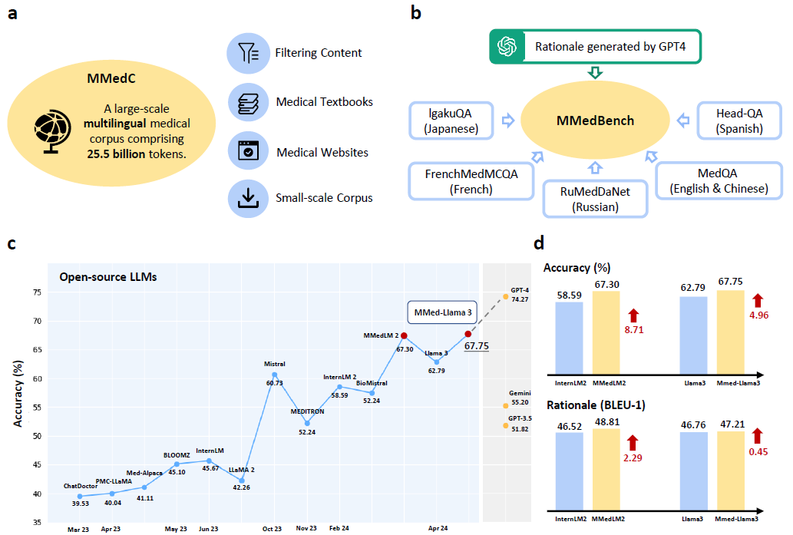
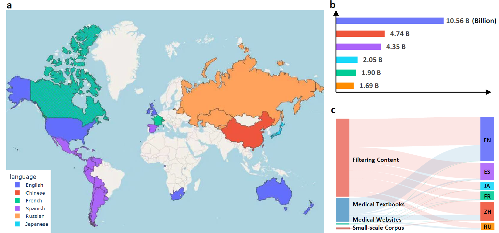
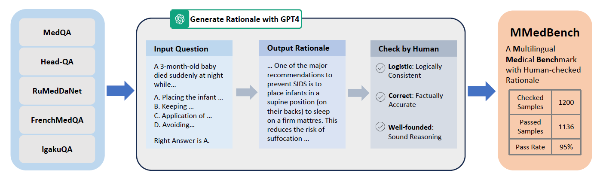
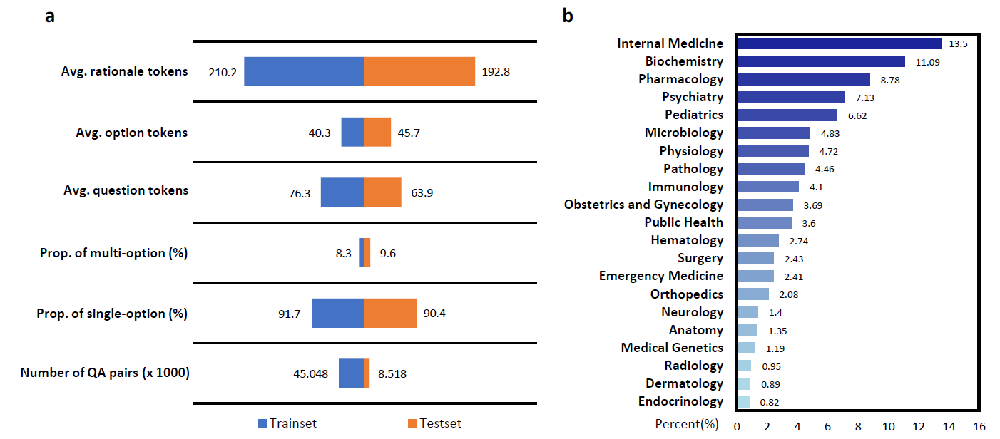
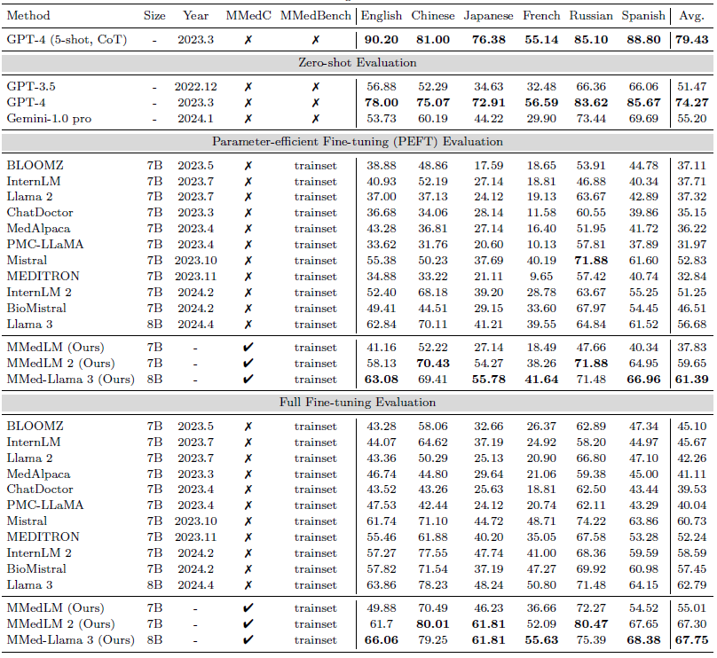
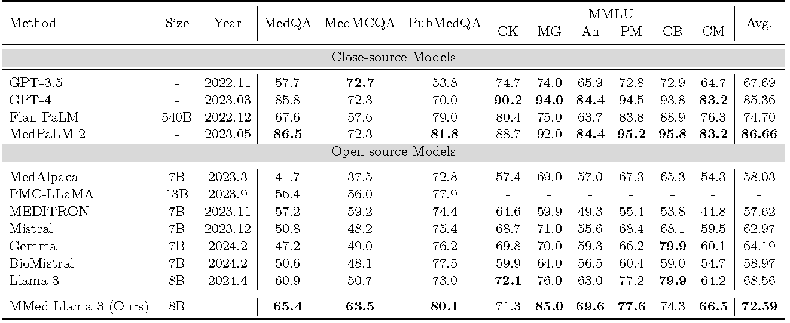
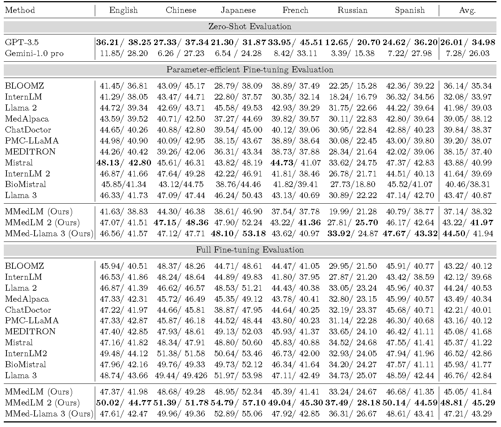
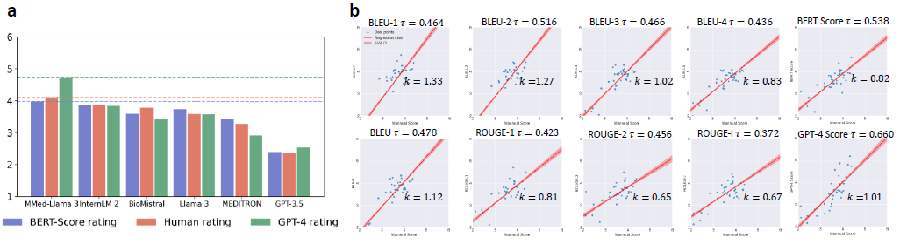

Towards Building Multilingual Language Model for Medicine
|
|
1CMIC, Shanghai Jiao Tong University
|
2Shanghai AI Laboratory
|
Abstract
The development of open-source, multilingual medical language models can benefit a wide, linguistically diverse audience from different regions. To promote this domain, we present contributions from the following: First, we construct a multilingual medical corpus, containing approximately 25.5B tokens encompassing 6 main languages, termed as MMedC, enabling auto-regressive domain adaptation for general LLMs; Second, to monitor the development of multilingual medical LLMs, we propose a multilingual medical multi-choice question-answering benchmark with rationale, termed as MMedBench; Third, we have assessed a number of open-source large language models (LLMs) on our benchmark, along with those further auto-regressive trained on MMedC. Our final model, MMed-Llama 3, with only 8B parameters, achieves superior performance compared to all other open-source models on both MMedBench and English benchmarks, even rivaling GPT-4. In conclusion, in this work, we present a large-scale corpus, a benchmark and a series of models to support the development of multilingual medical LLMs.

Pre-training Corpus Construction
Overview of our multilingual medical corpus (MMedC). This vast pre-training corpus
contains over 25.5B tokens and encompasses 6 main languages, which greatly compensates for
the lack of multilingual medical corpus.
In detail, Sub-figure (a) illustrates that MMedC collectively covers a significant portion of the global population.
Subsequently, Sub-figure (b) presents a detailed breakdown of the token distribution across these languages.
Lastly, Sub-figure (c) delineates the contribution of four distinct sources to our dataset across different languages.

Medical Benchmark Construction
For better evaluation of models' performance in the medical domain across diverse languages, we
collect a comprehensive Multilingual Medical Benchmark (MMedBench), spanning 6 principal languages.
Specifically, we started by collecting existing medical question-answering benchmarks for each language, and expand these multi-choice QA
with corresponding explanations using GPT-4, followed by strict human verification to ensure the correctness
of contents.

MMedBench finally includes 45048 samples for training and 8518 samples for testing. Sub-figure (a) illustrates the detailed fundamental characteristics,
and Sub-figure (b) showcases the diversity of our multilingual benchmark, spanning a wide array of medical questions
from foundational clinical medicine to specialized areas such as pharmacology and public health, with a
pronounced emphasis on areas like Internal Medicine and Biochemistry.

Final Results
we present a comprehensive benchmark of the foremost LLMs using our MMedBench under
zero-shot, PEFT, and full fine-tuning settings. Our evaluation focuses on two aspects of model performance:
the accuracy in multiple-choice questions and the models’ ability to generate rationales.
Accuracy on MMedBench
Accuracy of different LLMs on MMedBench. Our final model, MMed-Llama 3 demonstrate significant
improvements over it’s counterparts without further training on MMedC and refers to the most
competitive open-source model with 8B parameters in proximity to GPT-4, showcasing its exceptional
capabilities across languages in medical domain.

Accuracy on Common English Benchmarks
We furhter compare the performance of our model on common English benchmarks with other existing models.
Although MMed-Llama 3 is designed for multilingualism, it also demonstrates state-of-the-art performance
on English benchmarks.

Rationale Evaluation on MMedBench
Our study extends to examining the rationale ability of various LLMs, enabling a clear assessment of its reasoning capabilities.

Given the limitations of automatic metrics in evaluating free-text generation, we further employ relative human rating.
Sub-figure (a) illustrates the comparative analysis of model performances through relative ratings, while
Sub-figure (b) delves into the correlation between various automatic evaluation metrics and human preferences.

Conclusion
In conclusion, in this paper, we describe an automatic pipeline for building up a new multilingual medical corpus together
with a new benchmark. Specifically, we developed MMedC, a large-scale medical corpus with 25.5B tokens
covering six main languages, and MMedBench, a comprehensive benchmark encompassing 6 primary languages.
To monitor the development progress of medical multilingual LLMs, we have evaluated eleven existing LLMs on
multi-choice question-answering and rationale generation abilities under various settings. Experimentally, we
demonstrate the effectiveness of further training on MMedC, significantly filling the gap in adapting advanced
general multilingual LLMs into complex and professional medical domain. As a result, we open-source the
MMed-Llama 3, which to our knowledge, denotes the first, and strongest multilingual language model for
medicine, also demonstrating impressive performance in various English benchmarks